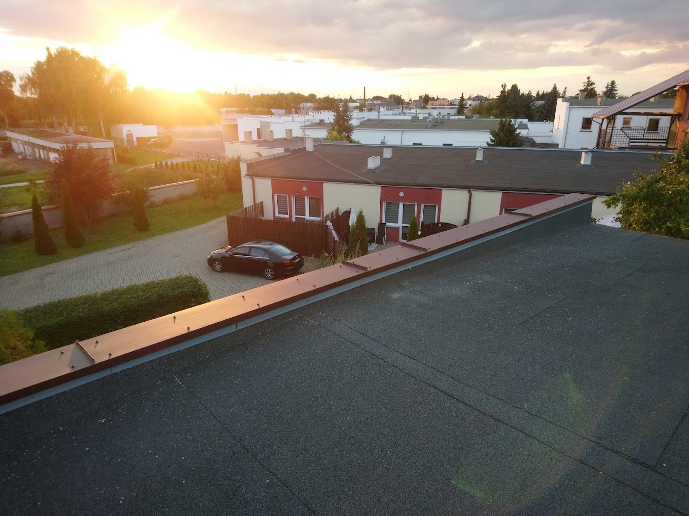

Pokrycia dachowe, obróbki blacharskie i naprawy w Kościanie i okolicy. Ponad 20 lat doświadczenia przy dachach płaskich i skośnych, od dużych realizacji po drobne naprawy.
Dekarstwem i blacharstwem zajmujemy się od ponad dwudziestu lat. Znamy się na dachach płaskich, skośnych i każdej obróbce blacharskiej.
Wykonujemy kompleksowe pokrycia dachów, jak i drobne naprawy: nieszczelności, poprawę ułożenia dachówek czy demontaż anteny.
Działamy przez całą dobę, więc na zgłoszenie awarii czy przecieku po burzy reagujemy szybko, bez zbędnego czekania.
Krycie i wymiana papy termozgrzewalnej wraz ze wszystkimi obróbkami krawędzi i kominów.
Montaż dachówki i blachodachówki dopasowany do konstrukcji więźby i lokalnych warunków.
Usuwamy przecieki i wymieniamy uszkodzone elementy pokrycia, także w trybie awaryjnym.
Kominy, kalenice i pasy nadrynnowe, obrabiamy blachą każdy trudny detal dachu.
Nowe systemy rynnowe, naprawa nieszczelnych złączy i czyszczenie zatkanych rynien.
Demontaż anten, poprawa ułożenia dachówek i inne prace zlecane przy okazji oględzin.
5,0 na Google i 5,0 na Fixly, na podstawie opinii wystawionych po zakończonej pracy.
"Polecam usługi firmy. Bardzo sprawny i solidny fachowiec. Przyjechał na oględziny, a od razu zdemontował antenę i poprawił ułożenie dachówek. Wszystko wykonał szybko, dokładnie i profesjonalnie."
"Profesjonalna i solidna usługa. Szybka diagnoza problemu, sprawna naprawa i dokładne wykonanie. Fachowiec godny polecenia."
"Bardzo sprawnie i solidnie wykonana praca. Jeśli ktoś szuka dekarza, to polecam usługi tej firmy."
"Profesjonalne podejście i dobre doradztwo. Szybka realizacja. Polecam."
"Profesjonaliści, ludzie którzy robią to z pasji. Pozdrawiam."
"Jestem pod wrażeniem fachowości. Usługa związana z zaciekiem ściany spowodowanym nieszczelnością dachu wykonana, mimo że poprzednia ekipa połamała sobie na tym zęby. Gorąco polecam."
"Dzisiaj pytanie, dzisiaj odpowiedź i tego samego dnia wykonana praca. Super kontakt, polecam tego wykonawcę."
"Szybko, fachowo i czysto po robocie."
Zadzwoń i opowiedz, co dzieje się z dachem. Ustalimy termin oględzin i powiemy uczciwie, ile będzie kosztować naprawa.